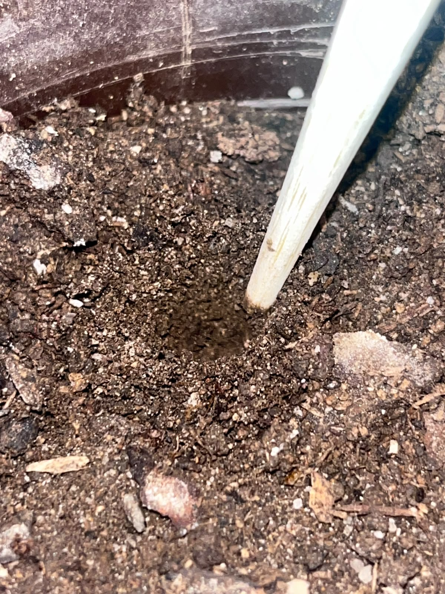
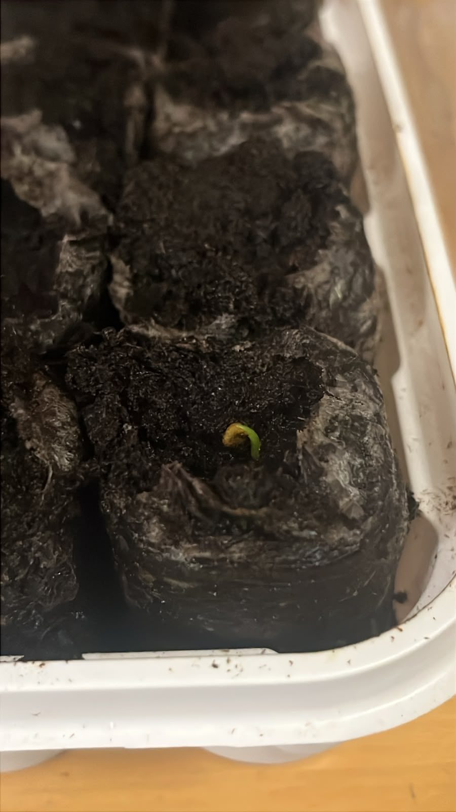

Get to know more on taking care of your Jalapeño plants with these tips. From planting your first seed to harvesting your peppers, this guide covers everything you need.
Planting
Jalapeño seeds require to be planted at least 1/4 inch deep. Once the seed is planted, moisten the soil and cover it with a Tequila Shot glass to trap humidity and help germination.

Watering
The optimal amount of water is about 100–350ml per day, depending on your pot size. Let the top inch of soil dry out between waterings to avoid root rot.
Watering Calculator
Sunlight
Jalapeños need approximately 8–10 hours of direct sunlight per day without anything blocking them. Grow them in the sunniest open spot you can find.

Problems
The most common issues when caring for Jalapeño plants are leaves turning brown from overwatering, and pests such as ants or spider mites. Check your plant regularly and water only when the top layer of soil feels dry.
Harvesting
Pick your Jalapeños when they're about 3–4 inches long and feel firm to the touch. They should be a deep, dark green color. You can also leave them on the plant longer to turn red, which makes them slightly sweeter.
Bonus Tip!
Buy a small greenhouse kit with peat pellets — you can find these at Walmart or Home Depot. Follow the instructions included with the product.
This creates a greenhouse effect and your plants will grow significantly faster!
